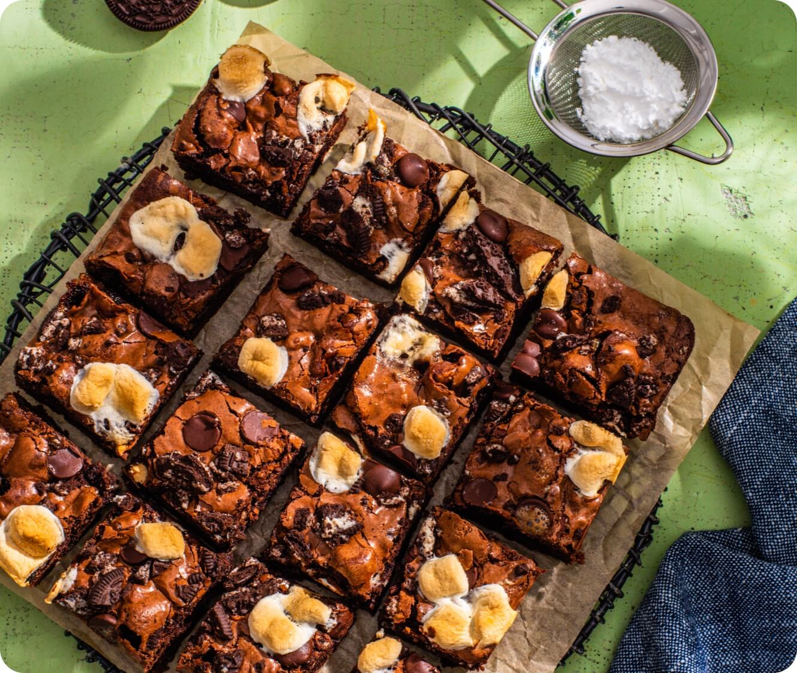

Brownies Sin Harina

Son súper fáciles de hacer ya que no se utiliza medidora, batidora,
procesadora ni nada por el estilo. ¡Ideales para acompañar con te
o mate!
Ingredientes
- 3 bananas maduras grandes
- 1/2 taza cacao amargo en polvo
- 1/2 taza mantequilla de maní
- 1 puñado almendras o nueces
Pasos
- Pisar las bananas, agregar el cacao en polvo y revolver hasta
integrar bien.
- Agregar la mantequilla de maní y volver a integrar.
- Llevar la preparación a una fuente pequeña con papel manteca
y sumar los frutos secos picados.
- Cocinar en horno fuerte por 20'.
- Marcar los cuadrados con un cuchillo y dejar enfriar.
- Llevar a la heladera para que tomen consistencia y terminar
de cortarlos.
- ¡Listo!